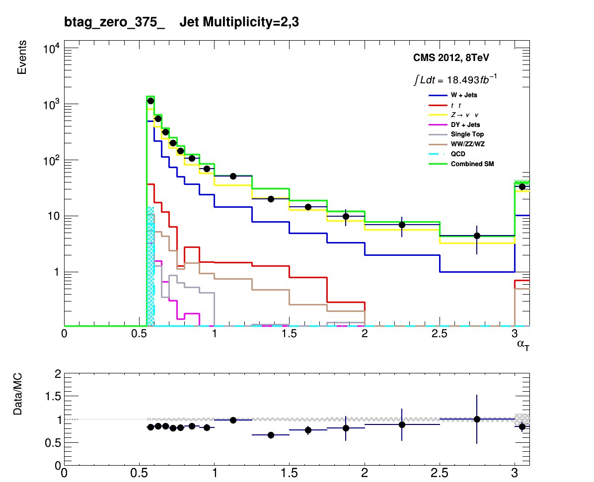
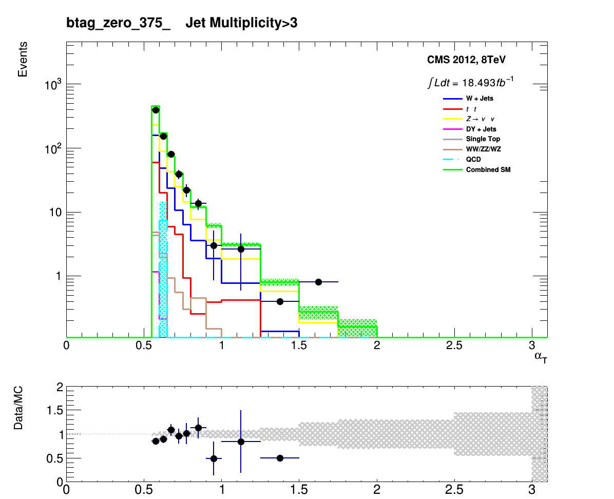
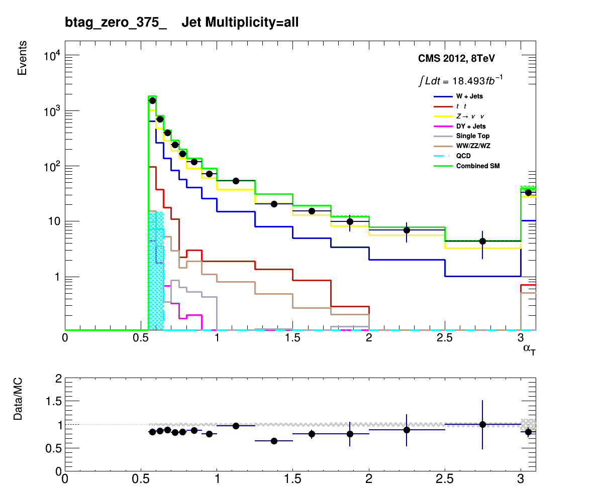
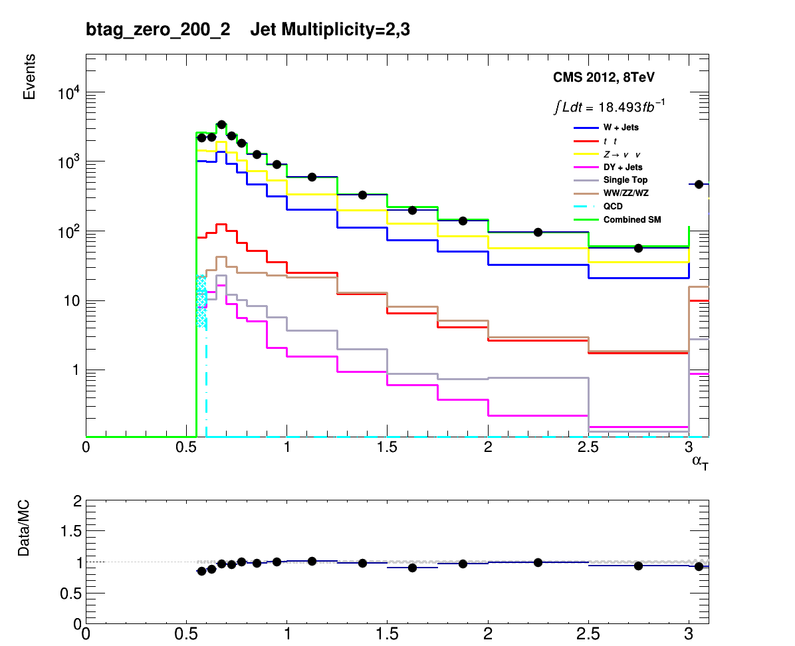
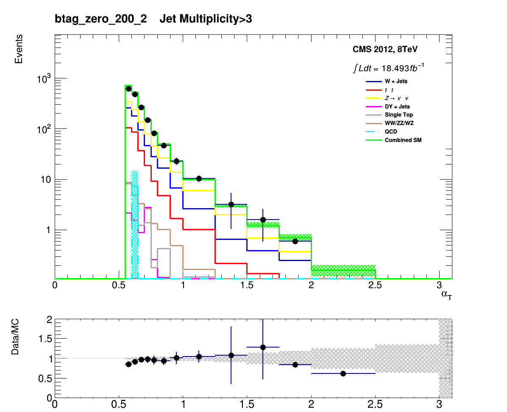
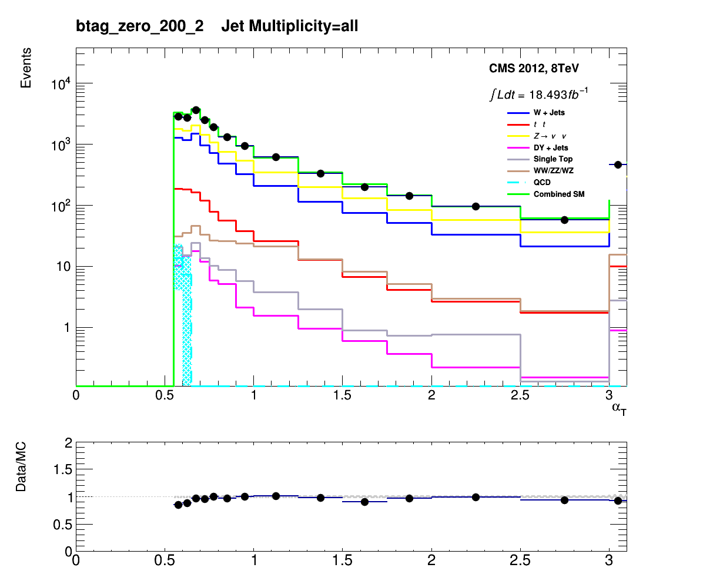

Author: Darren Burton <br> 
Analyst: Chris Lucas <br> 
<script language="Javascript"> 
 document.write("Last Modified: " + document.lastModified + ""); 
 </script> <br> 
 <center>
 <p> 
 <font size="5"> Had Plots </font>
 </p>
<font size="3">Results for AlphaT_all_Zero </font><br> 
Hist Name: <a href="AlphaT_all_Zero.html">AlphaT_all</a>       |     <a href="HT_all_Zero.html">HT_all</a>       |     <br> 
<br> 
Btag Multiplicities:  <a href="AlphaT_all_Zero.html">0-btag</a>     /    <a href="AlphaT_all_More_Than_One.html">More Than One</a>     /    <a href="AlphaT_all_Two.html">2-btag</a>     /    <a href="AlphaT_all_Inclusive.html">Inclusive</a>     /    <br> 
<br> 
Change Evolution Type: <a href="AlphaT_all_375_upwards.html">HT Evolution</a><br> 
<br> 
 Toggle Full/Basic/Stacked Plots:<a href="Stacked_AlphaT_all_Zero.html">   Stacked </a>     |     <a href="Simplified_AlphaT_all_Zero.html">   Simplified </a><br> 
<br> 
Toggle background source:<a href="Prediction_AlphaT_all_Zero.html">    Prediction from data </a><br> 
<br> 
 Return to Home Page:<a href="../RA1_Website_Plots.html"> Go </a><br><br><a href=AlphaT_2_btag_zero_375_upwards.png></a> 
<a href=AlphaT_3_btag_zero_375_upwards.png></a> 
<a href=AlphaT_all_btag_zero_375_upwards.png></a> 
<a href=AlphaT_2_btag_zero_200_upwards.png></a> 
<a href=AlphaT_3_btag_zero_200_upwards.png></a> 
<a href=AlphaT_all_btag_zero_200_upwards.png></a> 
